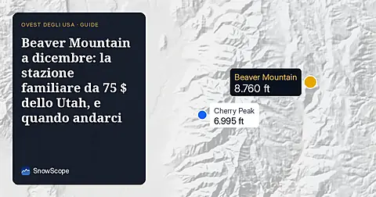
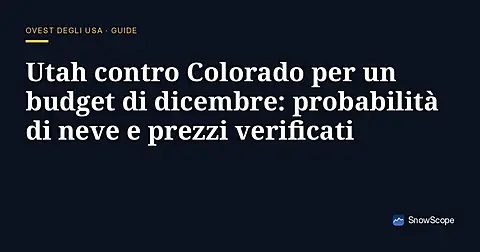
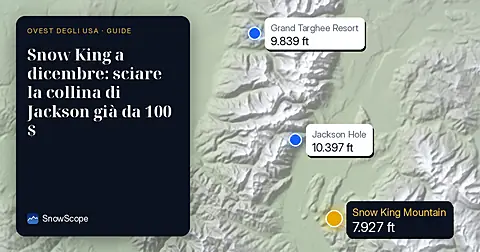
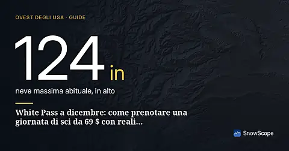
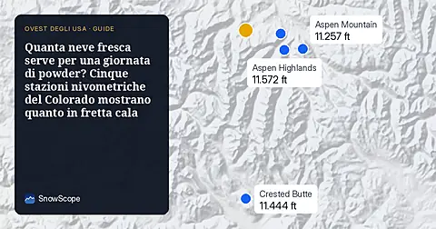
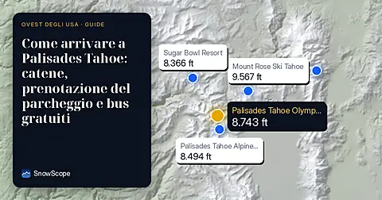

Bollettini neve · Ovest degli USA
Bollettini neve quotidiani per sciatori: dove c'è neve, cosa arriva e dove sciare, dalla mappa neve di SnowScope e dalle stazioni di misura. Ogni numero viene dai dati del giorno.

Beaver Mountain offre forfait a prezzo fisso di 75 dollari senza maggiorazioni nei giorni di punta. L'inizio di dicembre è spesso scarso; punta alla metà del mese o dopo, quando la neve è più affidabile.

Bridger Bowl chiede $86 online per il 2026/27. A metà montagna ci sono 20 cm il 15 dicembre in metà degli inverni; la settimana di Natale migliora le probabilità al 78 %.

La stazione sciistica d'alta quota in Colorado mantiene lo skipass per adulti nei giorni feriali a 49 dollari per la stagione 2026-27; la neve a metà montagna raggiunge 66 cm verso la metà di dicembre in un inverno tipico. Dati del 13 novembre 2026.

Sunlight vicino a Glenwood Springs affronta una scommessa di inizio stagione a dicembre. A metà mese puoi aspettarti 67 cm a mezza montagna, anche se solo il 72% degli inverni raggiunge quella profondità.

La mezza montagna di Timberline ha 52 in (132 cm) di neve tipica il 15 dicembre. I pendii superiori raggiungono 58 in (147 cm). I biglietti giornalieri interi partono da $129 in bassa stagione.

Da Ski Cooper (49 $ nei giorni feriali, 99 $ nel weekend) a Mt. Baker (98,80 $ contro 115,42 $): le differenze di prezzo di dicembre verificate in sette stazioni dell'Ovest americano, con le loro probabilità di neve.

Indy Base Pass 419 $, Indy+ 469 $, due giorni in ogni stazione aderente. Lo abbiamo confrontato con i prezzi giornalieri verificati di sette stazioni Indy a dicembre, e le loro probabilità di neve.

Lo skipass feriale di Lookout Pass costa 63 $ prenotato in anticipo. A metà dicembre la parte alta della montagna di solito mantiene 75-95 cm. Dati del 13 novembre 2026.

Resort locale vicino a Missoula a 7.530 ft (2.296 m) con skipass giornalieri a $78 nei giorni feriali. Le piste di mezzo e di vetta mantengono tipicamente 76–93 cm a metà dicembre. Dati del 13 novembre 2026.

Il 3-Pack di Schweitzer offre tre giorni per $249 su un crinale che sale da 1.221 m a 1.949 m. La neve a metà montagna il 15 dicembre raggiunge in media 90 cm, con l'85% degli inverni sopra 50 cm.

Brighton guida all'inizio di dicembre con 37 pollici (94 cm) di neve tipica il 15. Wolf Creek si allinea a Natale. Prezzi e affidabilità a confronto.

Brundage Mountain offre neve affidabile all'inizio della stagione vicino a McCall, Idaho. La profondità tipica a metà montagna raggiunge 77 cm entro la metà di dicembre, con skipass a partire da 65 dollari in giorni selezionati.

Snow King si trova alla base di Jackson. A metà dicembre, la mezza montagna di solito accumula 71 cm. Dati aggiornati al 13 novembre 2026.

Loveland vende biglietti online a $60 fino al 13 dicembre, poi $159 dal 14 dicembre. Le nevicate di inizio dicembre mediamente raggiungono 50 cm a metà montagna, ma la base è profonda la metà rispetto a metà inverno.

White Pass premia le prenotazioni anticipate nei giorni feriali. A metà dicembre, a media quota si accumula in genere 40 in (102 cm). Dati del 13 novembre 2026.

Wolf Creek ha 87 cm a media quota in una stagione tipica al 15 dicembre. I prezzi di punta iniziano il 20 dicembre. Dati: 13 novembre 2026.

La mezza montagna di Brighton mantiene tipicamente 37 cm (94 cm) il 15 dicembre. Dati aggiornati al 13 novembre 2026.

16 stazioni sciistiche USA classificate per probabilità di neve entro il 15 dicembre e prezzo dello skipass giornaliero per adulti. Grand Targhee guida con il 100% di probabilità; cinque stazioni combinano oltre l'80% di probabilità con skipass sotto i $80. Dati del 13 novembre 2026.

Grand Targhee garantisce neve affidabile a dicembre a tutte le quote. A metà montagna, 118 cm è tipico entro metà dicembre, con il 100% degli inverni che raggiungono almeno 50 cm. Dati del 13 novembre 2026.

Mt. Baker a dicembre: 46 in (116 cm) di neve a metà montagna in un tipico 15 dicembre, e uno skipass da 98,80 $ dal lunedì al giovedì, venduto solo in giornata alla cassa.



Una nevicata il 4 novembre ha lasciato da 8 a 13 inches di neve fresca su cinque stazioni in quota del Colorado vicino ad Aspen. Cinque giorni dopo, metà era sparita. Cosa significa per le giornate di powder.

Prospettive stagionali per le Montagne Rocciose: dicembre più caldo, neve vicina alla norma, ma il nord tende al magro mentre Colorado e Utah rimangono incerti. Dati del 10 novembre 2026.
Vail in numeri: picco abituale di circa 64 in (162 cm) a metà montagna in 46 inverni passati, marzo il mese più nevoso, più terreno, accesso e sicurezza.

Steamboat, Colorado, per famiglie: cosa va bene per i più piccoli, i bambini, i ragazzi e i genitori, con la neve di 46 inverni passati a tre quote.

Come passare il primo giorno a Park City Mountain, Utah, e quando andarci: il nostro storico dà circa 71 in (180 cm) come picco abituale a metà montagna in 46 inverni passati.

Mt Baker, Washington: circa 133 in (337 cm) di picco abituale a metà montagna in 46 inverni passati, un record mondiale di neve, nessun alloggio in quota.

Pianifica Mammoth Mountain per stagione: circa 93 in (235 cm) di picco abituale a metà montagna in 46 inverni passati, marzo il più nevoso, primavere lunghe, inverni variabili.

Jackson Hole mantiene neve profonda fino a primavera inoltrata sulle sue vette. Abbiamo controllato sei credenze comuni rispetto a 46 anni di storia nivale. Dati da novembre 2026.

Arrivare a Telluride d'inverno, aeroporto per aeroporto: Telluride Regional, Montrose, la strada 145 con la legge sulla trazione del Colorado e la cabinovia gratuita per Mountain Village.

Snowbird si trova in fondo a Little Cottonwood Canyon. Spieghiamo l'obbligo di pneumatici invernali, lo stato della strada, l'autobus per gli sciatori e perché il viaggio influisce sulla profondità della neve.

Palisades Tahoe Olympic Valley si trova a 68 km da Reno. L'accesso invernale dipende dalle catene da neve, dalle prenotazioni parcheggio e dalla conoscenza delle previsioni. Dati del 8 novembre 2026.

Big Sky, Montana, facile da immaginare: 5.850 acri sotto il Lone Peak, e una neve circa cinque volte più spessa vicino alla cima che alla base in 46 inverni passati.

Aspen Snowmass a confronto: Snowmass ha circa 75 in (190 cm) di picco abituale a metà montagna in 46 inverni passati, Aspen Mountain circa 69 in (174 cm).

Alta's mid-mountain usually peaks near 109 in (276 cm). Our 46-winter snow history answers when to come, which height suits you, and why the road matters. Data from 2026-11-07.